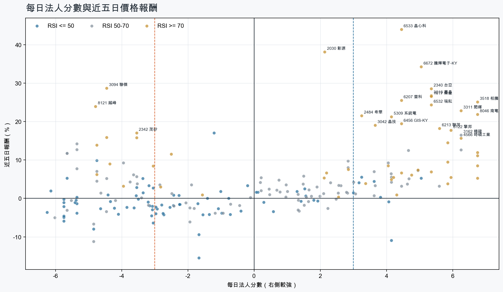
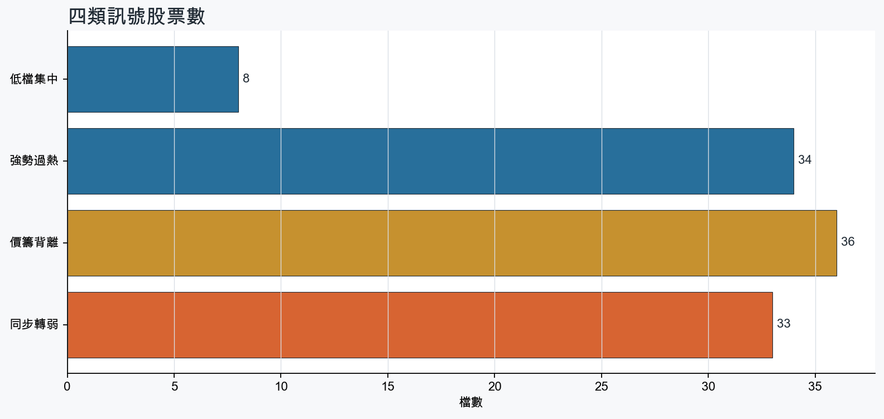
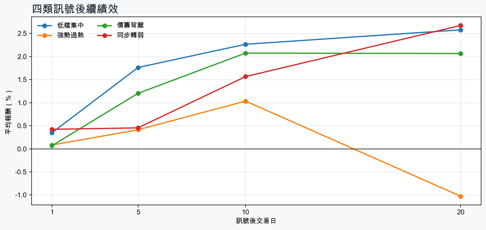

市場情緒中性分歧
近5日法人合計-1,455,060 張
篩選池上漲比例65.0%
籌碼好 / RSI低8 檔
籌碼差 / 價跌15 檔



EPS × PE VALUATION
法人常用的相對估值
顯示保守、基準與樂觀估值帶，不把單一數字包裝成精準目標價。
最新累計 EPS 依季數年化 × 同產業有效 P/E 的 Q25／中位數／Q75。排除本公司、非正 P/E，並以 1.5×IQR 排除離群值。估值帶是公開資料篩選值，不是法人目標價；未使用分析師預估 EPS。
MOOD × MONEY
情緒與籌碼雷達
熱度代表被討論程度；情緒分與法人方向分開計算。熱門不等於適合追價，樣本不足也不硬判多空。
| 股票 | 情緒 | 討論熱度 | 情緒 × 籌碼 | 情緒 × 基本面 |
|---|---|---|---|---|
| 8299 群聯同步轉弱 | 中性分歧 +13.4信心 100 | 1002 篇 / 159 留言 / 3 則新聞 | 高熱分歧法人分 -4.5 | 基本面與情緒分歧基本面分 +3.6 |
| 2498 宏達電價籌背離 | 情緒高漲 +77.2信心 77 | 871 篇 / 77 留言 / 3 則新聞 | 熱門但法人撤退法人分 -4.4 | 情緒領先基本面基本面分 -2.8 |
| 6488 環球晶價籌背離 | 情緒高漲 +75.7信心 76 | 781 篇 / 43 留言 / 3 則新聞 | 熱門但法人撤退法人分 -5.7 | 基本面與情緒共振基本面分 +1.1 |
| 8046 南電強勢過熱 | 偏多 +23.3信心 71 | 781 篇 / 41 留言 / 3 則新聞 | 情籌共振法人分 +6.8 | 基本面與情緒共振基本面分 +3.6 |
| 3189 景碩強勢過熱 | 偏多 +23.3信心 71 | 781 篇 / 41 留言 / 3 則新聞 | 情籌共振法人分 +6.8 | 基本面與情緒共振基本面分 +3.6 |
| 2324 仁寶同步轉弱 | 中性分歧 +0.0信心 63 | 721 篇 / 27 留言 / 3 則新聞 | 高熱分歧法人分 -5.4 | 基本面與情緒分歧基本面分 +3.0 |
| 3264 欣銓同步轉弱 | 中性分歧 +0.0信心 30 | 440 篇 / 0 留言 / 3 則新聞 | 情籌混合法人分 -4.8 | 基本面與情緒分歧基本面分 +3.6 |
| 8210 勤誠同步轉弱 | 偏空 -29.7信心 30 | 440 篇 / 0 留言 / 3 則新聞 | 情籌雙弱法人分 -5.8 | 基本面佳、情緒悲觀基本面分 +3.6 |
| 2605 新興同步轉弱 | 中性分歧 +0.0信心 30 | 440 篇 / 0 留言 / 3 則新聞 | 情籌混合法人分 -5.8 | 基本面與情緒分歧基本面分 +3.6 |
| 3260 威剛同步轉弱 | 偏空 -29.7信心 30 | 440 篇 / 0 留言 / 3 則新聞 | 情籌雙弱法人分 -5.8 | 基本面佳、情緒悲觀基本面分 +3.6 |
| 3094 聯傑價籌背離 | 中性分歧 +0.0信心 30 | 440 篇 / 0 留言 / 3 則新聞 | 情籌混合法人分 -4.5 | 基本面與情緒分歧基本面分 +3.6 |
| 4919 新唐價籌背離 | 中性分歧 +0.0信心 30 | 440 篇 / 0 留言 / 3 則新聞 | 情籌混合法人分 -4.8 | 基本面與情緒分歧基本面分 -0.8 |
01
籌碼好 / RSI低
優先研究基本面；法人續買且價格止穩時，才適合分批觀察。
| 股票 / 確認狀態 | 每日法人分 | 浦男式近似 | 法人加速度 | RSI / 相對強弱 | 量價確認 | 融資融券 | 每週集保確認 | 基本面 | EPS × 同業 P/E 估值 | 情緒 / 情籌 | 近期消息 | 論壇討論 |
|---|---|---|---|---|---|---|---|---|---|---|---|---|
| 2344 華邦電可研究 · 91 分籌碼與價格確認，可列研究清單 | +5.0法人 +51,607 張 / 4 天 | 接近 · 84站上月線；中期均線偏多；法人籌碼偏多；留意相對強度普通、量能尚未確認 | +81,653 張近3日 +62,625 / 連續 +3 日 | 47.6相對大盤 -0.7% | 量比 0.66確認分 +3.6價格、量能與籌碼未見明顯弱項 | -%融資 - 張 / 融券 - 張 | -2.89 pp1000張 -3.48 pp | 單月營收年增 +289.4%；累計營收年增 +177.4%；2026 Q2 累計 EPS 7.65仍需觀察下一期財報延續性來源：公開資訊觀測站 | 基準 NT$ 426.7估值帶 286.3–776.5現價 180.0 · 低於估值帶 · 距基準 +137.1%2026 Q2 累計 EPS 7.65 → 年化 15.30半導體同業 P/E 18.71／27.89／50.75 · n=149 · 信心中等以 Q2 累計 EPS 年化，不等同分析師全年預估來源：TWSE／TPEx 每日本益比 | 偏多 +29.7熱度 44 / 信心 30情籌共振 | 華邦電南亞科之外還有它？漲停後逼近官股目標價：「銅凸塊」2027年開始貢獻- 上市櫃旺得富理財網 · 10/01華邦電354億元併購英飛凌！不只搶車用商機 更押注AI邊緣、下一代記憶體財訊 · 10/01 | 近期沒有明確提及本股的論壇樣本 |
| 1513 中興電可研究 · 81 分籌碼與價格確認，可列研究清單 | +3.8法人 +2,476 張 / 4 天 | 接近 · 84站上月線；中期均線偏多；法人籌碼偏多；留意相對強度普通、量能尚未確認 | +226 張近3日 +1,555 / 連續 -1 日 | 48.4相對大盤 -2.7% | 量比 0.88確認分 +1.6價格、量能與籌碼未見明顯弱項 | -%融資 - 張 / 融券 - 張 | +0.33 pp1000張 +0.75 pp | 單月營收年增 +8.9%；累計營收年增 +4.2%；2026 Q2 累計 EPS 4.50仍需觀察下一期財報延續性來源：公開資訊觀測站 | 基準 NT$ 185.3估值帶 124.4–286.7現價 166.5 · 估值帶內 · 距基準 +11.3%2026 Q2 累計 EPS 4.50 → 年化 9.00電機機械同業 P/E 13.82／20.59／31.86 · n=71 · 信心中等以 Q2 累計 EPS 年化，不等同分析師全年預估來源：TWSE／TPEx 每日本益比 | 樣本不足 +0.0熱度 0 / 信心 0情緒樣本不足 | 近期沒有通過股票語境篩選的新聞 | 近期沒有明確提及本股的論壇樣本 |
| 5608 四維航等待確認 · 72 分籌碼有訊號，但價格尚未確認 | +4.1法人 +1,775 張 / 5 天 | 接近 · 68站上月線；中期均線偏多；法人籌碼偏多；留意法人買盤未加速、相對強度普通 | -1,386 張近3日 +836 / 連續 +10 日 | 44.4相對大盤 -1.2% | 量比 0.46確認分 -1.1成交量不足；法人買盤減速 | -%融資 - 張 / 融券 - 張 | +1.16 pp1000張 +2.70 pp | 單月營收年增 +39.1%；累計營收年增 +13.9%；2026 Q2 累計 EPS 0.32仍需觀察下一期財報延續性來源：公開資訊觀測站 | 不適用年化 EPS 與交易所近四季 EPS 差異過大，可能有股本調整或一次性損益 | 樣本不足 +0.0熱度 0 / 信心 0情緒樣本不足 | 近期沒有通過股票語境篩選的新聞 | 近期沒有明確提及本股的論壇樣本 |
| 2408 南亞科可研究 · 82 分籌碼與價格確認，可列研究清單 | +3.6法人 +22,267 張 / 4 天 | 接近 · 79站上月線；中期均線偏多；法人籌碼偏多；留意相對強度普通、量能異常 | +32,005 張近3日 +15,293 / 連續 +3 日 | 49.0相對大盤 -2.8% | 量比 0.54確認分 +2.5成交量不足 | -%融資 - 張 / 融券 - 張 | -1.56 pp1000張 -2.29 pp | 單月營收年增 +560.9%；累計營收年增 +638.2%；2026 Q2 累計 EPS 23.38仍需觀察下一期財報延續性來源：公開資訊觀測站 | 基準 NT$ 1,304估值帶 874.9–2,373現價 519.0 · 低於估值帶 · 距基準 +151.3%2026 Q2 累計 EPS 23.38 → 年化 46.76半導體同業 P/E 18.71／27.89／50.75 · n=149 · 信心中等以 Q2 累計 EPS 年化，不等同分析師全年預估來源：TWSE／TPEx 每日本益比 | 偏多 +29.7熱度 44 / 信心 30情籌共振 | 華邦電南亞科之外還有它？漲停後逼近官股目標價：「銅凸塊」2027年開始貢獻- 上市櫃旺得富理財網 · 10/01國科會通過南亞科進駐屏東園區 還有這3家公司鞏固半導體供應鏈UDN · 10/01 | 近期沒有明確提及本股的論壇樣本 |
| 6547 高端疫苗等待確認 · 80 分先等基本面止穩 | +3.2法人 +2,422 張 / 3 天 | 接近 · 65站上月線；中期均線偏多；法人籌碼偏多；留意相對強度普通、量能尚未確認 | +930 張近3日 +1,809 / 連續 -1 日 | 36.5相對大盤 -0.9% | 量比 0.69確認分 +3.5價格、量能與籌碼未見明顯弱項 | -0.9%融資 -113 張 / 融券 +52 張 | +0.11 pp1000張 -0.92 pp | 單月營收年增 +416.9%；累計營收年增 +39.4%2026 Q2 累計 EPS -0.02；2026 Q2 累計營益率 -4.8%來源：公開資訊觀測站 | 不適用年化 EPS 非正數，不適合使用本益比估值 | 偏多 +19.8熱度 37 / 信心 20情籌混合 | 《9/29日法人買超》外資買超前三名：鑽石投資(1155張)、高端疫苗(740張)、國光生(450張)genetinfo.com · 09/306547 高端疫苗 - 跌的好，可以安靜一天了！😘 - 股市爆料同學會CMoney · 10/01 | 近期沒有明確提及本股的論壇樣本 |
| 2351 順德等待確認 · 56 分籌碼有訊號，但價格尚未確認 | +4.2法人 +2,265 張 / 3 天 | 未命中 · 54中期均線偏多；法人籌碼偏多；買超具延續性；留意未站月線、法人買盤未加速 | -4,559 張近3日 -1,131 / 連續 -2 日 | 36.6相對大盤 -9.0% | 量比 0.55確認分 -4.8收盤跌破20日線；近20日弱於大盤；成交量不足；法人買盤減速 | -%融資 - 張 / 融券 - 張 | +1.90 pp1000張 +2.65 pp | 單月營收年增 +61.2%；累計營收年增 +32.5%；2026 Q2 累計 EPS 2.82仍需觀察下一期財報延續性來源：公開資訊觀測站 | 基準 NT$ 156.6估值帶 105.5–283.0現價 212.5 · 估值帶內 · 距基準 -26.3%2026 Q2 累計 EPS 2.82 → 年化 5.64半導體同業 P/E 18.71／27.77／50.18 · n=149 · 信心中等以 Q2 累計 EPS 年化，不等同分析師全年預估來源：TWSE／TPEx 每日本益比 | 樣本不足 +0.0熱度 0 / 信心 0情緒樣本不足 | 近期沒有通過股票語境篩選的新聞 | 近期沒有明確提及本股的論壇樣本 |
| 6153 嘉聯益等待確認 · 60 分先等基本面止穩 | +3.2法人 +2,889 張 / 4 天 | 接近 · 63站上月線；中期均線偏多；法人籌碼偏多；留意法人買盤未加速、明顯弱於大盤 | -730 張近3日 +1,113 / 連續 -1 日 | 49.4相對大盤 -3.8% | 量比 1.70確認分 +0.1近20日弱於大盤；法人買盤減速 | -%融資 - 張 / 融券 - 張 | -0.17 pp1000張 -0.37 pp | 單月營收年增 +16.0%；累計營收年增 +5.3%2026 Q2 累計 EPS -0.86；2026 Q2 累計營益率 -24.2%來源：公開資訊觀測站 | 不適用年化 EPS 非正數，不適合使用本益比估值 | 樣本不足 +0.0熱度 0 / 信心 0情緒樣本不足 | 近期沒有通過股票語境篩選的新聞 | 近期沒有明確提及本股的論壇樣本 |
| 2385 群光等待確認 · 56 分先等基本面止穩 | +3.0法人 +2,016 張 / 5 天 | 未命中 · 51中期均線偏多；法人籌碼偏多；法人買盤加速；留意未站月線、明顯弱於大盤 | +1,633 張近3日 +1,412 / 連續 +5 日 | 44.4相對大盤 -4.4% | 量比 0.70確認分 -0.8收盤跌破20日線；近20日弱於大盤 | -%融資 - 張 / 融券 - 張 | -0.56 pp1000張 +0.05 pp | 2026 Q2 累計 EPS 5.06單月營收年增 -23.1%；累計營收年增 -8.5%；2026 Q2 累計營益率 5.0%來源：公開資訊觀測站 | 基準 NT$ 282.4估值帶 192.6–475.8現價 105.5 · 低於估值帶 · 距基準 +167.6%2026 Q2 累計 EPS 5.06 → 年化 10.12電子零組件同業 P/E 19.03／27.90／47.02 · n=151 · 信心中等以 Q2 累計 EPS 年化，不等同分析師全年預估來源：TWSE／TPEx 每日本益比 | 樣本不足 +0.0熱度 27 / 信心 10情緒樣本不足 | 2385 群光- 群爛別演了快下來- 股市爆料同學會CMoney · 10/01 | 近期沒有明確提及本股的論壇樣本 |
02
籌碼好 / RSI高
趨勢強但不追價，等待量縮、RSI降溫或回測支撐。
| 股票 / 確認狀態 | 每日法人分 | 浦男式近似 | 法人加速度 | RSI / 相對強弱 | 量價確認 | 融資融券 | 每週集保確認 | 基本面 | EPS × 同業 P/E 估值 | 情緒 / 情籌 | 近期消息 | 論壇討論 |
|---|---|---|---|---|---|---|---|---|---|---|---|---|
| 8150 南茂等待拉回 · 100 分等拉回，不追價 | +5.8法人 +25,628 張 / 4 天 | 命中 · 89站上月線；中期均線偏多；法人籌碼偏多；留意法人買盤未加速、動能位置非最佳 | -30,587 張近3日 +3,477 / 連續 +2 日 | 72.2相對大盤 +20.9% | 量比 1.71確認分 +2.5法人買盤減速 | -%融資 - 張 / 融券 - 張 | +7.51 pp1000張 +7.44 pp | 單月營收年增 +33.3%；累計營收年增 +30.0%；2026 Q2 累計 EPS 2.00仍需觀察下一期財報延續性來源：公開資訊觀測站 | 基準 NT$ 111.1估值帶 74.84–203.0現價 115.5 · 估值帶內 · 距基準 -3.8%2026 Q2 累計 EPS 2.00 → 年化 4.00半導體同業 P/E 18.71／27.77／50.75 · n=149 · 信心中等以 Q2 累計 EPS 年化，不等同分析師全年預估來源：TWSE／TPEx 每日本益比 | 偏多 +29.7熱度 44 / 信心 30情籌共振 | 歐系外資調升南茂目標 SiPh 光學凸塊業務有望貢獻明年營收經濟日報 · 09/28焦點股》南茂：漲價效益發威 爆量攻漲停自由財經 · 09/30 | 近期沒有明確提及本股的論壇樣本 |
| 3105 穩懋等待拉回 · 100 分等拉回，不追價 | +5.0法人 +11,480 張 / 3 天 | 命中 · 96站上月線；中期均線偏多；法人籌碼偏多；留意動能位置非最佳 | +6,770 張近3日 +12,610 / 連續 +2 日 | 70.2相對大盤 +6.4% | 量比 0.96確認分 +6.1價格、量能與籌碼未見明顯弱項 | -0.7%融資 -321 張 / 融券 +374 張 | +2.18 pp1000張 +2.44 pp | 單月營收年增 +30.6%；累計營收年增 +33.0%；2026 Q2 累計 EPS 3.56仍需觀察下一期財報延續性來源：公開資訊觀測站 | 基準 NT$ 197.4估值帶 132.3–356.8現價 538.0 · 高於估值帶 · 距基準 -63.3%2026 Q2 累計 EPS 3.56 → 年化 7.12半導體同業 P/E 18.58／27.73／50.11 · n=148 · 信心中等以 Q2 累計 EPS 年化，不等同分析師全年預估來源：TWSE／TPEx 每日本益比 | 中性分歧 -9.9熱度 44 / 信心 30情籌混合 | 光通訊小回溫！「這檔」飆上漲停、穩懋噴漲8.72% 穎崴勁揚3%、華星光、光聖卻下跌1%Yahoo股市 · 09/30〈焦點股〉受惠星鏈衛星題材、光通訊產品量產 穩懋衝上漲停news.cnyes.com · 09/30 | 近期沒有明確提及本股的論壇樣本 |
| 8021 尖點等待拉回 · 95 分等拉回，不追價 | +6.0法人 +1,628 張 / 5 天 | 接近 · 79站上月線；中期均線偏多；法人籌碼偏多；留意法人買盤未加速、量能異常 | -1,334 張近3日 +743 / 連續 +7 日 | 73.2相對大盤 +8.8% | 量比 0.26確認分 +1.1成交量不足；法人買盤減速 | -%融資 - 張 / 融券 - 張 | +3.02 pp1000張 +4.03 pp | 單月營收年增 +97.8%；累計營收年增 +76.1%；2026 Q2 累計 EPS 3.25仍需觀察下一期財報延續性來源：公開資訊觀測站 | 基準 NT$ 142.5估值帶 100.5–247.5現價 503.0 · 高於估值帶 · 距基準 -71.7%2026 Q2 累計 EPS 3.25 → 年化 6.50其他電子同業 P/E 15.46／21.93／38.07 · n=69 · 信心中等以 Q2 累計 EPS 年化，不等同分析師全年預估來源：TWSE／TPEx 每日本益比 | 偏多 +19.8熱度 37 / 信心 20情籌混合 | 8021 尖點- 真的很棒加油!! - 股市爆料同學會CMoney · 10/01尖點擴產急發行CB及現增案籌資案今完成訂價估將籌資逾21億元news.cnyes.com · 09/29 | 近期沒有明確提及本股的論壇樣本 |
| 6532 瑞耘等待拉回 · 100 分等拉回，不追價 | +5.3法人 +1,640 張 / 4 天 | 接近 · 86站上月線；中期均線偏多；法人籌碼偏多；留意量能異常、動能位置非最佳 | +1,817 張近3日 +1,682 / 連續 +4 日 | 76.0相對大盤 +21.2% | 量比 5.55確認分 +4.8融資單日增幅偏高 | +5.8%融資 +187 張 / 融券 +3 張 | +2.52 pp1000張 +0.00 pp | 單月營收年增 +74.2%；累計營收年增 +15.0%；2026 Q2 累計 EPS 2.01仍需觀察下一期財報延續性來源：公開資訊觀測站 | 基準 NT$ 112.1估值帶 75.21–204.0現價 122.5 · 估值帶內 · 距基準 -8.5%2026 Q2 累計 EPS 2.01 → 年化 4.02半導體同業 P/E 18.71／27.89／50.75 · n=149 · 信心中等以 Q2 累計 EPS 年化，不等同分析師全年預估來源：TWSE／TPEx 每日本益比 | 偏多 +29.7熱度 44 / 信心 30情籌共振 | 瑞耘(6532) 台灣廠產能滿載！馬來西亞新廠第4季驗證，離供貨放量不遠？news.cnyes.com · 10/01【12:47 即時新聞】瑞耘(6532)股價走強，AI半導體擴產題材受關注CMoney投資網誌 · 10/01 | 近期沒有明確提及本股的論壇樣本 |
| 3293 鈊象等待拉回 · 100 分等拉回，不追價 | +6.8法人 +9,990 張 / 5 天 | 接近 · 70站上月線；法人籌碼偏多；法人買盤加速；留意中期均線未翻多、量能異常 | +2,318 張近3日 +6,430 / 連續 +6 日 | 84.9相對大盤 +11.5% | 量比 3.03確認分 +6.020日線低於60日線 | -3.1%融資 -72 張 / 融券 +6 張 | +1.13 pp1000張 +0.82 pp | 單月營收年增 +24.8%；累計營收年增 +18.1%；2026 Q2 累計 EPS 22.77仍需觀察下一期財報延續性來源：公開資訊觀測站 | 基準 NT$ 642.6估值帶 505.9–1,437現價 814.0 · 估值帶內 · 距基準 -21.1%2026 Q2 累計 EPS 22.77 → 年化 45.54文化創意同業 P/E 11.11／14.11／31.55 · n=14 · 信心中等以 Q2 累計 EPS 年化，不等同分析師全年預估來源：TWSE／TPEx 每日本益比 | 中性分歧 +0.0熱度 44 / 信心 30情籌混合 | 鈊象(3293)基本面極強「讓利潤奔跑，同時分批鎖利」的策略CMoney · 10/013293 鈊象 - 自我紀錄用 - 股市爆料同學會CMoney · 10/01 | 近期沒有明確提及本股的論壇樣本 |
| 3605 宏致等待拉回 · 94 分等拉回，不追價 | +5.8法人 +3,514 張 / 4 天 | 接近 · 79站上月線；中期均線偏多；法人籌碼偏多；留意法人買盤未加速、量能異常 | -1,513 張近3日 +698 / 連續 +2 日 | 77.4相對大盤 +38.8% | 量比 0.59確認分 +1.1成交量不足；法人買盤減速 | -%融資 - 張 / 融券 - 張 | +5.42 pp1000張 +2.90 pp | 單月營收年增 +17.2%；累計營收年增 +17.2%；2026 Q2 累計 EPS 1.892026 Q2 累計營益率 6.4%來源：公開資訊觀測站 | 基準 NT$ 102.2估值帶 70.50–175.8現價 178.0 · 高於估值帶 · 距基準 -42.6%2026 Q2 累計 EPS 1.89 → 年化 3.78電子零組件同業 P/E 18.65／27.03／46.50 · n=151 · 信心中等以 Q2 累計 EPS 年化，不等同分析師全年預估來源：TWSE／TPEx 每日本益比 | 樣本不足 +0.0熱度 27 / 信心 10情緒樣本不足 | 【13:14 即時新聞】宏致(3605)股價走強，AI高速連接器題材續成焦點CMoney投資網誌 · 10/01 | 近期沒有明確提及本股的論壇樣本 |
| 2404 漢唐等待拉回 · 98 分等拉回，不追價 | +5.8法人 +2,132 張 / 4 天 | 接近 · 79站上月線；法人籌碼偏多；買超具延續性；留意中期均線未翻多、法人買盤未加速 | -2,404 張近3日 -81 / 連續 +2 日 | 74.0相對大盤 +15.6% | 量比 1.04確認分 +2.520日線低於60日線；法人買盤減速 | -%融資 - 張 / 融券 - 張 | +2.04 pp1000張 +1.09 pp | 單月營收年增 +59.1%；累計營收年增 +71.6%；2026 Q2 累計 EPS 36.23仍需觀察下一期財報延續性來源：公開資訊觀測站 | 基準 NT$ 1,634估值帶 1,120–2,866現價 1,305 · 估值帶內 · 距基準 +25.2%2026 Q2 累計 EPS 36.23 → 年化 72.46其他電子同業 P/E 15.46／22.55／39.55 · n=69 · 信心中等以 Q2 累計 EPS 年化，不等同分析師全年預估來源：TWSE／TPEx 每日本益比 | 樣本不足 +9.9熱度 27 / 信心 10情緒樣本不足 | 美光台灣擴產排到2028年，漢唐與亞翔誰先吃到訂單-子敏左側交易CMoney投資網誌 · 10/01 | 近期沒有明確提及本股的論壇樣本 |
| 6672 騰輝電子-KY等待拉回 · 100 分等拉回，不追價 | +5.0法人 +6,890 張 / 4 天 | 接近 · 85站上月線；中期均線偏多；法人籌碼偏多；留意量能尚未確認、RSI過熱 | +524 張近3日 +3,031 / 連續 +2 日 | 81.4相對大盤 +42.6% | 量比 2.71確認分 +5.8價格、量能與籌碼未見明顯弱項 | -%融資 - 張 / 融券 - 張 | +2.52 pp1000張 -0.45 pp | 單月營收年增 +133.2%；累計營收年增 +53.6%；2026 Q2 累計 EPS 4.75仍需觀察下一期財報延續性來源：公開資訊觀測站 | 基準 NT$ 253.8估值帶 176.7–434.8現價 405.5 · 估值帶內 · 距基準 -37.4%2026 Q2 累計 EPS 4.75 → 年化 9.50電子零組件同業 P/E 18.60／26.71／45.77 · n=150 · 信心中等以 Q2 累計 EPS 年化，不等同分析師全年預估來源：TWSE／TPEx 每日本益比 | 樣本不足 +0.0熱度 27 / 信心 10情緒樣本不足 | 【12:18 即時新聞】騰輝電子-KY(6672)股價走強，CCL高階材料與AI需求續成焦點CMoney投資網誌 · 10/01 | 近期沒有明確提及本股的論壇樣本 |
| 6526 達發等待拉回 · 95 分等拉回，不追價 | +6.8法人 +2,461 張 / 5 天 | 接近 · 73站上月線；中期均線偏多；法人籌碼偏多；留意法人買盤未加速、量能異常 | -3,302 張近3日 +282 / 連續 +9 日 | 79.8相對大盤 +21.3% | 量比 0.42確認分 +1.1成交量不足；法人買盤減速 | -%融資 - 張 / 融券 - 張 | +2.45 pp1000張 +0.44 pp | 單月營收年增 +26.1%；累計營收年增 +12.5%；2026 Q2 累計 EPS 9.72仍需觀察下一期財報延續性來源：公開資訊觀測站 | 基準 NT$ 539.9估值帶 363.7–986.6現價 829.0 · 估值帶內 · 距基準 -34.9%2026 Q2 累計 EPS 9.72 → 年化 19.44半導體同業 P/E 18.71／27.77／50.75 · n=149 · 信心中等以 Q2 累計 EPS 年化，不等同分析師全年預估來源：TWSE／TPEx 每日本益比 | 樣本不足 +0.0熱度 27 / 信心 10情緒樣本不足 | 焦點股》達發：光通訊業務大爆發！ 明年營收規模大增逾3倍自由財經 · 09/18 | 近期沒有明確提及本股的論壇樣本 |
| 1560 中砂等待拉回 · 97 分等拉回，不追價 | +6.8法人 +1,985 張 / 5 天 | 接近 · 78站上月線；中期均線偏多；法人籌碼偏多；留意法人買盤未加速、量能尚未確認 | -1,362 張近3日 +567 / 連續 +7 日 | 82.9相對大盤 +31.4% | 量比 0.76確認分 +1.8法人買盤減速 | -%融資 - 張 / 融券 - 張 | +1.53 pp1000張 +0.79 pp | 單月營收年增 +30.4%；累計營收年增 +24.5%；2026 Q2 累計 EPS 6.44仍需觀察下一期財報延續性來源：公開資訊觀測站 | 基準 NT$ 263.4估值帶 178.0–392.7現價 1,000 · 高於估值帶 · 距基準 -73.7%2026 Q2 累計 EPS 6.44 → 年化 12.88電機機械同業 P/E 13.82／20.45／30.49 · n=71 · 信心中等以 Q2 累計 EPS 年化，不等同分析師全年預估來源：TWSE／TPEx 每日本益比 | 中性分歧 +0.0熱度 37 / 信心 20情籌混合 | 【13:01 即時新聞】中砂(1560) 股價走強，市場聚焦先進製程耗材需求CMoney投資網誌 · 10/011560 中砂 - 10/1收盤 中砂上漲收在1000塊 聯傑漲停收在67.7塊 - 股市爆料同學會CMoney · 10/01 | 近期沒有明確提及本股的論壇樣本 |
| 6122 擎邦等待拉回 · 100 分等拉回，不追價 | +6.0法人 +2,126 張 / 5 天 | 接近 · 90站上月線；中期均線偏多；法人籌碼偏多；留意RSI過熱 | +374 張近3日 +1,375 / 連續 +10 日 | 95.4相對大盤 +26.7% | 量比 2.31確認分 +7.1價格、量能與籌碼未見明顯弱項 | -4.6%融資 -70 張 / 融券 +0 張 | +4.59 pp1000張 +0.91 pp | 單月營收年增 +13.6%；2026 Q2 累計 EPS 2.19；2026 Q2 累計營益率 10.9%累計營收年增 -0.2%來源：公開資訊觀測站 | 基準 NT$ 90.18估值帶 61.14–139.6現價 62.30 · 估值帶內 · 距基準 +44.8%2026 Q2 累計 EPS 2.19 → 年化 4.38電機機械同業 P/E 13.96／20.59／31.86 · n=71 · 信心中等以 Q2 累計 EPS 年化，不等同分析師全年預估來源：TWSE／TPEx 每日本益比 | 樣本不足 +0.0熱度 0 / 信心 0情緒樣本不足 | 近期沒有通過股票語境篩選的新聞 | 近期沒有明確提及本股的論壇樣本 |
| 8046 南電等待拉回 · 97 分等拉回，不追價 | +6.8法人 +10,727 張 / 5 天 | 接近 · 79站上月線；法人籌碼偏多；買超具延續性；留意中期均線未翻多、法人買盤未加速 | -6,050 張近3日 +5,400 / 連續 +6 日 | 75.8相對大盤 +12.9% | 量比 1.76確認分 +2.520日線低於60日線；法人買盤減速 | -%融資 - 張 / 融券 - 張 | -0.61 pp1000張 -0.23 pp | 單月營收年增 +40.6%；累計營收年增 +39.6%；2026 Q2 累計 EPS 5.53仍需觀察下一期財報延續性來源：公開資訊觀測站 | 基準 NT$ 298.9估值帶 206.3–512.4現價 1,420 · 高於估值帶 · 距基準 -79.0%2026 Q2 累計 EPS 5.53 → 年化 11.06電子零組件同業 P/E 18.65／27.03／46.33 · n=151 · 信心中等以 Q2 累計 EPS 年化，不等同分析師全年預估來源：TWSE／TPEx 每日本益比 | 偏多 +23.3熱度 78 / 信心 71情籌共振 | 花旗喊進南電！ 目標價上調至1700元 股價嗨翻噴7%東森電視 · 10/01目標價1575元！欣興、景碩、南電ABF載板題材噴發「法人最看好它」：通吃ASIC、GPU兩大訂單Yahoo股市 · 10/01 | [新聞] 目標價1575元！欣興、景碩、南電ABF載板PTT Stock · 10-01 · 41 留言 |
| 3016 嘉晶等待拉回 · 94 分等拉回，不追價 | +5.3法人 +15,483 張 / 4 天 | 接近 · 73站上月線；中期均線偏多；法人籌碼偏多；留意法人買盤未加速、量能異常 | -20,410 張近3日 +641 / 連續 +1 日 | 91.0相對大盤 +58.5% | 量比 0.27確認分 +1.1成交量不足；法人買盤減速 | -%融資 - 張 / 融券 - 張 | +4.65 pp1000張 +4.44 pp | 單月營收年增 +57.8%；累計營收年增 +34.7%；2026 Q2 累計 EPS 1.00仍需觀察下一期財報延續性來源：公開資訊觀測站 | 基準 NT$ 55.54估值帶 37.42–100.4現價 168.0 · 高於估值帶 · 距基準 -66.9%2026 Q2 累計 EPS 1.00 → 年化 2.00半導體同業 P/E 18.71／27.77／50.18 · n=149 · 信心中等以 Q2 累計 EPS 年化，不等同分析師全年預估來源：TWSE／TPEx 每日本益比 | 偏多 +29.7熱度 44 / 信心 30情籌共振 | 嘉晶獲利／8月自結賺7,400萬元、年增73倍 EPS 0.25元UDN · 10/01嘉晶8月自結獲利暴增73倍 每股賺0.25元自由財經 · 10/01 | 近期沒有明確提及本股的論壇樣本 |
| 3189 景碩等待拉回 · 98 分等拉回，不追價 | +6.8法人 +14,528 張 / 5 天 | 接近 · 83站上月線；中期均線偏多；法人籌碼偏多；留意法人買盤未加速、RSI過熱 | -15,911 張近3日 +4,081 / 連續 +6 日 | 80.7相對大盤 +12.6% | 量比 1.74確認分 +2.5法人買盤減速 | -%融資 - 張 / 融券 - 張 | +0.01 pp1000張 -0.58 pp | 單月營收年增 +40.6%；累計營收年增 +32.1%；2026 Q2 累計 EPS 3.74仍需觀察下一期財報延續性來源：公開資訊觀測站 | 基準 NT$ 207.7估值帶 139.9–375.4現價 1,010 · 高於估值帶 · 距基準 -79.4%2026 Q2 累計 EPS 3.74 → 年化 7.48半導體同業 P/E 18.71／27.77／50.18 · n=149 · 信心中等以 Q2 累計 EPS 年化，不等同分析師全年預估來源：TWSE／TPEx 每日本益比 | 偏多 +23.3熱度 78 / 信心 71情籌共振 | 【Hot台股】景碩首登千金俱樂部！網苦笑「200賣飛沒想到1000了」 分析師這樣看Yahoo股市 · 10/01景碩首登千金！ABF三雄「光輝10月」齊創高 外資估2028缺口恐飆逾5成旺得富理財網 · 10/01 | [新聞] 目標價1575元！欣興、景碩、南電ABF載板PTT Stock · 10-01 · 41 留言 |
| 8050 廣積等待拉回 · 93 分等拉回，不追價 | +5.3法人 +2,276 張 / 4 天 | 接近 · 79站上月線；法人籌碼偏多；買超具延續性；留意中期均線未翻多、法人買盤未加速 | -402 張近3日 +1,102 / 連續 +1 日 | 77.1相對大盤 +9.2% | 量比 1.19確認分 +2.520日線低於60日線；法人買盤減速 | +2.1%融資 +88 張 / 融券 -4 張 | +0.93 pp1000張 +0.40 pp | 單月營收年增 +94.5%；累計營收年增 +17.6%；2026 Q2 累計 EPS 2.692026 Q2 累計營益率 5.8%來源：公開資訊觀測站 | 基準 NT$ 90.11估值帶 67.52–130.8現價 63.40 · 低於估值帶 · 距基準 +42.1%2026 Q2 累計 EPS 2.69 → 年化 5.38電腦及週邊同業 P/E 12.55／16.75／24.32 · n=77 · 信心較低以 Q2 累計 EPS 年化，不等同分析師全年預估；年化 EPS 為交易所近四季 EPS 的 2.05 倍，需保守解讀來源：TWSE／TPEx 每日本益比 | 樣本不足 +0.0熱度 0 / 信心 0情緒樣本不足 | 近期沒有通過股票語境篩選的新聞 | 近期沒有明確提及本股的論壇樣本 |
03
籌碼差 / 股價上漲
可能是事件行情或軋空；沒有籌碼改善前避免追高。
| 股票 / 確認狀態 | 每日法人分 | 浦男式近似 | 法人加速度 | RSI / 相對強弱 | 量價確認 | 融資融券 | 每週集保確認 | 基本面 | EPS × 同業 P/E 估值 | 情緒 / 情籌 | 近期消息 | 論壇討論 |
|---|---|---|---|---|---|---|---|---|---|---|---|---|
| 3094 聯傑風險警示 · 82 分背離警戒，避免追高 | -4.5法人 -1,857 張 / 2 天 | 接近 · 72站上月線；中期均線偏多；法人買盤加速；留意法人籌碼偏弱、買超延續不足 | +4,034 張近3日 +1,139 / 連續 +1 日 | 83.0相對大盤 +61.3% | 量比 2.16確認分 +6.5價格、量能與籌碼未見明顯弱項 | -%融資 - 張 / 融券 - 張 | +13.87 pp1000張 +11.88 pp | 單月營收年增 +30.2%；累計營收年增 +17.1%；2026 Q2 累計 EPS 0.39仍需觀察下一期財報延續性來源：公開資訊觀測站 | 基準 NT$ 21.63估值帶 14.49–39.09現價 67.70 · 高於估值帶 · 距基準 -68.0%2026 Q2 累計 EPS 0.39 → 年化 0.78半導體同業 P/E 18.58／27.73／50.11 · n=148 · 信心中等以 Q2 累計 EPS 年化，不等同分析師全年預估來源：TWSE／TPEx 每日本益比 | 中性分歧 +0.0熱度 44 / 信心 30情籌混合 | 【09:48 即時新聞】聯傑(3094)亮燈漲停，ASIC與網通IC題材受關注CMoney投資網誌 · 10/01聯傑(3094)搭上機器人題材！營收年增30%，一顆網路晶片如何卡位具身AI？news.cnyes.com · 09/29 | 近期沒有明確提及本股的論壇樣本 |
| 8121 越峰風險警示 · 40 分背離警戒，避免追高 | -4.8法人 -1,834 張 / 1 天 | 未命中 · 36站上月線；明顯強於大盤；基本面偏正向；留意中期均線未翻多、法人籌碼偏弱 | -2,233 張近3日 -1,981 / 連續 -3 日 | 82.4相對大盤 +21.2% | 量比 3.82確認分 +1.420日線低於60日線；法人買盤減速；流動性偏低 | -%融資 +0 張 / 融券 +0 張 | -0.14 pp1000張 -0.14 pp | 單月營收年增 +25.8%；累計營收年增 +22.6%2026 Q2 累計 EPS 0.00；2026 Q2 累計營益率 1.1%來源：公開資訊觀測站 | 不適用年化 EPS 非正數，不適合使用本益比估值 | 中性分歧 +0.0熱度 37 / 信心 20情籌混合 | 【12:54 即時新聞】越峰(8121)盤中走強，被動元件族群買盤延續CMoney投資網誌 · 10/01【11:04 即時新聞】越峰(8121)盤中走強，被動元件族群資金聚焦CMoney投資網誌 · 09/29 | 近期沒有明確提及本股的論壇樣本 |
| 3149 正達風險警示 · 37 分背離警戒，避免追高 | -4.5法人 -4,364 張 / 2 天 | 未命中 · 36站上月線；明顯強於大盤；流動性足夠；留意中期均線未翻多、法人籌碼偏弱 | -3,638 張近3日 -4,065 / 連續 -2 日 | 75.0相對大盤 +12.7% | 量比 4.91確認分 +1.420日線低於60日線；法人買盤減速 | -%融資 - 張 / 融券 - 張 | -1.36 pp1000張 -0.97 pp | 單月營收年增 +19.3%；累計營收年增 +13.1%2026 Q2 累計 EPS -0.85；2026 Q2 累計營益率 -17.5%來源：公開資訊觀測站 | 不適用年化 EPS 非正數，不適合使用本益比估值 | 樣本不足 +0.0熱度 27 / 信心 10情緒樣本不足 | 【09:21 即時新聞】正達(3149)亮燈漲停，玻璃基板題材成盤中焦點CMoney投資網誌 · 09/30 | 近期沒有明確提及本股的論壇樣本 |
| 4919 新唐風險警示 · 59 分背離警戒，避免追高 | -4.8法人 -8,124 張 / 2 天 | 未命中 · 47站上月線；法人買盤加速；明顯強於大盤；留意中期均線未翻多、法人籌碼偏弱 | +8,074 張近3日 -22 / 連續 +2 日 | 80.0相對大盤 +19.6% | 量比 2.26確認分 +6.520日線低於60日線 | -%融資 - 張 / 融券 - 張 | -0.91 pp1000張 -1.04 pp | 單月營收年增 +12.1%；累計營收年增 +1.0%2026 Q2 累計 EPS -0.57；2026 Q2 累計營益率 -2.8%來源：公開資訊觀測站 | 不適用年化 EPS 非正數，不適合使用本益比估值 | 中性分歧 +0.0熱度 44 / 信心 30情籌混合 | 【09:44 即時新聞】新唐(4919)盤中勁揚逼近漲停，AI相關MCU、BMC題材受追捧CMoney投資網誌 · 10/014919 新唐- 關注公司發展與未來展望- 股市爆料同學會CMoney · 09/30 | 近期沒有明確提及本股的論壇樣本 |
| 1709 和益風險警示 · 77 分背離警戒，避免追高 | -3.5法人 -7,171 張 / 3 天 | 接近 · 83站上月線；中期均線偏多；法人買盤加速；留意法人籌碼偏弱、動能位置非最佳 | +34,301 張近3日 +13,304 / 連續 +3 日 | 74.0相對大盤 +43.2% | 量比 1.02確認分 +6.5價格、量能與籌碼未見明顯弱項 | -%融資 - 張 / 融券 - 張 | +0.02 pp1000張 +0.55 pp | 單月營收年增 +82.7%；累計營收年增 +22.3%；2026 Q2 累計 EPS 1.30仍需觀察下一期財報延續性來源：公開資訊觀測站 | 基準 NT$ 48.15估值帶 35.41–67.63現價 53.20 · 估值帶內 · 距基準 -9.5%2026 Q2 累計 EPS 1.30 → 年化 2.60化學工業同業 P/E 13.62／18.52／26.01 · n=32 · 信心中等以 Q2 累計 EPS 年化，不等同分析師全年預估來源：TWSE／TPEx 每日本益比 | 中性分歧 +0.0熱度 37 / 信心 20情籌混合 | 【09:14 即時新聞】和益(1709)亮燈漲停，量能與法人買盤成焦點CMoney投資網誌 · 10/01《化工股》老牌化學廠逆襲！ 和益搶進半導體題材飆漲停富聯網 · 10/01 | 近期沒有明確提及本股的論壇樣本 |
| 8039 台虹風險警示 · 15 分背離警戒，避免追高 | -4.8法人 -3,016 張 / 2 天 | 未命中 · 45站上月線；中期均線偏多；量價健康；留意法人籌碼偏弱、法人買盤未加速 | -2,412 張近3日 -2,992 / 連續 -1 日 | 49.6相對大盤 -12.6% | 量比 1.39確認分 -1.5近20日弱於大盤；法人買盤減速 | -%融資 - 張 / 融券 - 張 | -12.43 pp1000張 -12.94 pp | 2026 Q2 累計 EPS 1.56單月營收年增 -13.8%；累計營收年增 -0.9%；2026 Q2 累計營益率 6.2%來源：公開資訊觀測站 | 基準 NT$ 83.34估值帶 58.03–142.8現價 288.5 · 高於估值帶 · 距基準 -71.1%2026 Q2 累計 EPS 1.56 → 年化 3.12電子零組件同業 P/E 18.60／26.71／45.77 · n=150 · 信心中等以 Q2 累計 EPS 年化，不等同分析師全年預估來源：TWSE／TPEx 每日本益比 | 偏多 +29.7熱度 44 / 信心 30熱門但法人撤退 | 今日最夯股／軟板旺季來臨 台虹爆量衝漲停 | 市場焦點 | 證券經濟日報 · 09/308月營收續達8億元以上 法人看好台虹明年EPS年增率可達55%以上理財周刊 · 09/30 | 近期沒有明確提及本股的論壇樣本 |
| 2342 茂矽風險警示 · 68 分背離警戒，避免追高 | -3.5法人 -5,853 張 / 3 天 | 接近 · 68站上月線；中期均線偏多；法人買盤加速；留意法人籌碼偏弱、基本面偏弱 | +5,156 張近3日 +266 / 連續 +2 日 | 76.1相對大盤 +16.8% | 量比 1.05確認分 +6.5價格、量能與籌碼未見明顯弱項 | -%融資 - 張 / 融券 - 張 | +3.79 pp1000張 +1.90 pp | 單月營收年增 +4.0%累計營收年增 -3.1%；2026 Q2 累計 EPS -0.23；2026 Q2 累計營益率 -4.7%來源：公開資訊觀測站 | 不適用年化 EPS 非正數，不適合使用本益比估值 | 樣本不足 +0.0熱度 27 / 信心 10情緒樣本不足 | 《台北股市》注意股：1日37檔高力.蔚華科.嘉晶.合晶.茂矽.浩鼎等- 上市櫃旺得富理財網 · 10/01 | 近期沒有明確提及本股的論壇樣本 |
| 6488 環球晶風險警示 · 62 分背離警戒，避免追高 | -5.7法人 -6,434 張 / 1 天 | 接近 · 68站上月線；法人買盤加速；明顯強於大盤；留意中期均線未翻多、法人籌碼偏弱 | +8,279 張近3日 +1,839 / 連續 -1 日 | 67.7相對大盤 +6.2% | 量比 2.30確認分 +6.620日線低於60日線 | -3.7%融資 -602 張 / 融券 +293 張 | -1.52 pp1000張 +0.62 pp | 單月營收年增 +7.6%；2026 Q2 累計 EPS 11.87；2026 Q2 累計營益率 9.9%累計營收年增 -3.1%來源：公開資訊觀測站 | 基準 NT$ 659.3估值帶 444.2–1,191現價 1,085 · 估值帶內 · 距基準 -39.2%2026 Q2 累計 EPS 11.87 → 年化 23.74半導體同業 P/E 18.71／27.77／50.18 · n=149 · 信心中等以 Q2 累計 EPS 年化，不等同分析師全年預估來源：TWSE／TPEx 每日本益比 | 情緒高漲 +75.7熱度 78 / 信心 76熱門但法人撤退 | 【13:30 即時新聞】環球晶(6488)股價走強，矽晶圓族群續成盤中焦點CMoney投資網誌 · 10/01熱門股／環球晶8月獲利年增145% 漲停站回千元！中美晶、合晶也亮燈| 產經非凡新聞台 · 10/01 | [情報] 6488 環球晶 8月自結:1.47 年增:145%PTT Stock · 09-29 · 43 留言 |
| 6620 漢達風險警示 · 43 分背離警戒，避免追高 | -5.3法人 -2,129 張 / 1 天 | 接近 · 67站上月線；中期均線偏多；明顯強於大盤；留意法人籌碼偏弱、法人買盤未加速 | -1,585 張近3日 -1,649 / 連續 -3 日 | 56.5相對大盤 +63.5% | 量比 2.03確認分 +1.9法人買盤減速；融資單日增幅偏高 | +9.5%融資 +1,072 張 / 融券 +8 張 | +3.14 pp1000張 +2.30 pp | 2026 Q2 累計 EPS 0.65；2026 Q2 累計營益率 25.4%單月營收年增 -79.9%；累計營收年增 -58.2%來源：公開資訊觀測站 | 基準 NT$ 18.76估值帶 15.42–24.43現價 144.5 · 高於估值帶 · 距基準 -87.0%2026 Q2 累計 EPS 0.65 → 年化 1.30生技醫療同業 P/E 11.86／14.43／18.79 · n=84 · 信心較低以 Q2 累計 EPS 年化，不等同分析師全年預估；年化 EPS 為交易所近四季 EPS 的 0.45 倍，需保守解讀來源：TWSE／TPEx 每日本益比 | 偏空 -19.8熱度 37 / 信心 20情籌混合 | 漢達HND-039上市倒數計時，增添市值想像- 新聞MoneyDJ理財網 · 10/01《9/30日法人賣超》外資賣超前三名：漢達(-899張)、鑽石投資(-768張)、國邑*(-132張)genetinfo.com · 09/30 | 近期沒有明確提及本股的論壇樣本 |
| 1809 中釉風險警示 · 44 分背離警戒，避免追高 | -5.3法人 -3,848 張 / 1 天 | 接近 · 67站上月線；中期均線偏多；明顯強於大盤；留意法人籌碼偏弱、法人買盤未加速 | -3,713 張近3日 -3,493 / 連續 -3 日 | 69.1相對大盤 +14.6% | 量比 1.29確認分 +2.5法人買盤減速 | -%融資 - 張 / 融券 - 張 | +0.75 pp1000張 +0.51 pp | 2026 Q2 累計 EPS 0.10單月營收年增 -4.1%；累計營收年增 -1.8%；2026 Q2 累計營益率 1.0%來源：公開資訊觀測站 | 不適用同產業有效 P/E 樣本不足（4 檔） | 中性分歧 +0.0熱度 44 / 信心 30情籌混合 | 1809 中釉- 今日呈現高檔震盪回檔的走勢- 股市爆料同學會CMoney · 10/011809 中釉- 【10/01 產業即時新聞】傳產-玻璃陶瓷即時股價變動：權值龍頭重挫拖累，建材類股逆勢突圍分化- 股市爆料同學會CMoney · 10/01 | 近期沒有明確提及本股的論壇樣本 |
| 3673 TPK-KY風險警示 · 36 分背離警戒，避免追高 | -5.7法人 -6,746 張 / 1 天 | 接近 · 61站上月線；中期均線偏多；明顯強於大盤；留意法人籌碼偏弱、法人買盤未加速 | -6,029 張近3日 -6,150 / 連續 -3 日 | 68.6相對大盤 +5.1% | 量比 4.00確認分 +0.6法人買盤減速 | -%融資 - 張 / 融券 - 張 | -0.05 pp1000張 +0.46 pp | 單月營收年增 +16.1%；累計營收年增 +15.3%；2026 Q2 累計 EPS 3.332026 Q2 累計營益率 -1.4%來源：公開資訊觀測站 | 基準 NT$ 170.6估值帶 90.31–258.3現價 73.30 · 低於估值帶 · 距基準 +132.7%2026 Q2 累計 EPS 3.33 → 年化 6.66光電同業 P/E 13.56／25.61／38.79 · n=68 · 信心中等以 Q2 累計 EPS 年化，不等同分析師全年預估來源：TWSE／TPEx 每日本益比 | 偏空 -29.7熱度 44 / 信心 30情籌雙弱 | 3673 TPK-KY - PCE低於預期因為計算方法變了- 股市爆料同學會CMoney · 10/01友達(2409)開盤爆量7.8萬張！面板股漲停行情退燒，群創、TPK-KY開始分化uanalyze.com.tw · 10/01 | 近期沒有明確提及本股的論壇樣本 |
| 3645 達邁風險警示 · 44 分背離警戒，避免追高 | -4.8法人 -2,146 張 / 2 天 | 接近 · 63站上月線；中期均線偏多；法人買盤加速；留意法人籌碼偏弱、買超延續不足 | +2,583 張近3日 +22 / 連續 -1 日 | 50.7相對大盤 -2.0% | 量比 1.31確認分 +4.0價格、量能與籌碼未見明顯弱項 | -%融資 - 張 / 融券 - 張 | -6.14 pp1000張 -9.02 pp | 2026 Q2 累計 EPS 1.52；2026 Q2 累計營益率 21.3%單月營收年增 -11.0%；累計營收年增 -2.7%來源：公開資訊觀測站 | 基準 NT$ 82.17估值帶 56.70–142.9現價 74.20 · 估值帶內 · 距基準 +10.7%2026 Q2 累計 EPS 1.52 → 年化 3.04電子零組件同業 P/E 18.65／27.03／47.02 · n=151 · 信心中等以 Q2 累計 EPS 年化，不等同分析師全年預估來源：TWSE／TPEx 每日本益比 | 樣本不足 +0.0熱度 27 / 信心 10情緒樣本不足 | 3645 達邁 - 垃圾……操… - 股市爆料同學會CMoney · 10/01 | 近期沒有明確提及本股的論壇樣本 |
| 2498 宏達電風險警示 · 45 分背離警戒，避免追高 | -4.4法人 -6,286 張 / 1 天 | 未命中 · 43站上月線；法人買盤加速；明顯強於大盤；留意中期均線未翻多、法人籌碼偏弱 | +4,562 張近3日 -1,846 / 連續 -2 日 | 72.2相對大盤 +3.9% | 量比 3.23確認分 +4.320日線低於60日線 | -%融資 - 張 / 融券 - 張 | -0.56 pp1000張 -0.85 pp | 尚無明確成長訊號單月營收年增 -7.7%；累計營收年增 -6.9%；2026 Q2 累計 EPS -0.62來源：公開資訊觀測站 | 不適用年化 EPS 非正數，不適合使用本益比估值 | 情緒高漲 +77.2熱度 87 / 信心 77熱門但法人撤退 | 宏達電要起飛了！ AMD砸2600億併購合作夥伴「躋身盟友」finance.ettoday.net · 09/30宏達電要起飛了！ AMD砸2600億併購合作夥伴「躋身盟友」facebook.com · 09/30 | [新聞] 宏達電有喜！合作夥伴 World Labs 被超微PTT Stock · 09-30 · 77 留言 |
| 6182 合晶風險警示 · 48 分背離警戒，避免追高 | -4.0法人 -36,240 張 / 2 天 | 接近 · 60站上月線；明顯強於大盤；基本面有支撐；留意中期均線未翻多、法人籌碼偏弱 | -33,484 張近3日 -29,848 / 連續 -1 日 | 68.9相對大盤 +9.1% | 量比 2.81確認分 +1.120日線低於60日線；法人買盤減速；融資單日增幅偏高 | +8.5%融資 +6,279 張 / 融券 +1,597 張 | +0.08 pp1000張 -0.45 pp | 單月營收年增 +20.0%；累計營收年增 +11.7%；2026 Q2 累計 EPS 0.062026 Q2 累計營益率 2.3%來源：公開資訊觀測站 | 基準 NT$ 3.33估值帶 2.25–6.02現價 130.0 · 高於估值帶 · 距基準 -97.4%2026 Q2 累計 EPS 0.06 → 年化 0.12半導體同業 P/E 18.71／27.77／50.18 · n=149 · 信心中等以 Q2 累計 EPS 年化，不等同分析師全年預估來源：TWSE／TPEx 每日本益比 | 偏多 +29.7熱度 44 / 信心 30熱門但法人撤退 | 合晶做什麼的？股價1.5年狂翻8倍，為何總座高喊：左右逢源！數位時代 · 10/01抄底族「1張賺破5萬」！合晶衝近2個月新高湧獲利了結賣壓 爆量下殺逾3%Yahoo股市 · 10/01 | 近期沒有明確提及本股的論壇樣本 |
| 8028 昇陽半導體風險警示 · 43 分背離警戒，避免追高 | -4.8法人 -4,438 張 / 2 天 | 未命中 · 56站上月線；明顯強於大盤；基本面有支撐；留意中期均線未翻多、法人籌碼偏弱 | -1,214 張近3日 -4,311 / 連續 -2 日 | 71.6相對大盤 +6.8% | 量比 0.80確認分 +1.420日線低於60日線；法人買盤減速 | -%融資 - 張 / 融券 - 張 | -1.57 pp1000張 -3.32 pp | 單月營收年增 +25.6%；累計營收年增 +29.1%；2026 Q2 累計 EPS 3.32仍需觀察下一期財報延續性來源：公開資訊觀測站 | 基準 NT$ 184.4估值帶 124.2–337.0現價 280.0 · 估值帶內 · 距基準 -34.1%2026 Q2 累計 EPS 3.32 → 年化 6.64半導體同業 P/E 18.71／27.77／50.75 · n=149 · 信心中等以 Q2 累計 EPS 年化，不等同分析師全年預估來源：TWSE／TPEx 每日本益比 | 中性分歧 +0.0熱度 44 / 信心 30情籌混合 | 昇陽半導體(8028)股價短線急漲 18.4%！如何用金包銀提早發現？-Sara WangCMoney投資網誌 · 09/29【10:18 即時新聞】昇陽半導體(8028)盤中強攻近9% 聚焦晶背供電再生晶圓題材CMoney投資網誌 · 09/29 | 近期沒有明確提及本股的論壇樣本 |
04
籌碼差 / 股價下跌
籌碼與價格同弱，原則上迴避，等待法人與大戶同時回補。
| 股票 / 確認狀態 | 每日法人分 | 浦男式近似 | 法人加速度 | RSI / 相對強弱 | 量價確認 | 融資融券 | 每週集保確認 | 基本面 | EPS × 同業 P/E 估值 | 情緒 / 情籌 | 近期消息 | 論壇討論 |
|---|---|---|---|---|---|---|---|---|---|---|---|---|
| 3264 欣銓風險警示 · 43 分迴避，等待籌碼翻正 | -4.8法人 -14,538 張 / 1 天 | 接近 · 70站上月線；中期均線偏多；相對大盤偏強；留意法人籌碼偏弱、法人買盤未加速 | -32,417 張近3日 -14,950 / 連續 -3 日 | 54.6相對大盤 +0.4% | 量比 1.15確認分 -0.0法人買盤減速；融資單日增幅偏高 | +10.5%融資 +1,188 張 / 融券 -8 張 | +1.69 pp1000張 +1.57 pp | 單月營收年增 +46.6%；累計營收年增 +33.9%；2026 Q2 累計 EPS 4.39仍需觀察下一期財報延續性來源：公開資訊觀測站 | 基準 NT$ 243.8估值帶 164.3–445.6現價 245.5 · 估值帶內 · 距基準 -0.7%2026 Q2 累計 EPS 4.39 → 年化 8.78半導體同業 P/E 18.71／27.77／50.75 · n=149 · 信心中等以 Q2 累計 EPS 年化，不等同分析師全年預估來源：TWSE／TPEx 每日本益比 | 中性分歧 +0.0熱度 44 / 信心 30情籌混合 | 3264 欣銓- 止跌，明日展開反彈。 - 股市爆料同學會CMoney · 10/013264 欣銓 - 連續三天測238都拉回 - 股市爆料同學會CMoney · 10/01 | 近期沒有明確提及本股的論壇樣本 |
| 3376 新日興風險警示 · 0 分迴避，等待籌碼翻正 | -6.2法人 -2,453 張 / 0 天 | 未命中 · 12法人買盤加速；流動性足夠；留意未站月線、中期均線未翻多 | +198 張近3日 -1,413 / 連續 -10 日 | 22.9相對大盤 -21.3% | 量比 0.31確認分 -3.1收盤跌破20日線；20日線低於60日線；近20日弱於大盤；成交量不足 | -%融資 - 張 / 融券 - 張 | -6.82 pp1000張 -6.80 pp | 2026 Q2 累計 EPS 0.47單月營收年增 -10.0%；累計營收年增 -12.5%；2026 Q2 累計營益率 -1.8%來源：公開資訊觀測站 | 基準 NT$ 25.41估值帶 17.53–43.55現價 174.0 · 高於估值帶 · 距基準 -85.4%2026 Q2 累計 EPS 0.47 → 年化 0.94電子零組件同業 P/E 18.65／27.03／46.33 · n=151 · 信心中等以 Q2 累計 EPS 年化，不等同分析師全年預估來源：TWSE／TPEx 每日本益比 | 樣本不足 +0.0熱度 0 / 信心 0情緒樣本不足 | 近期沒有通過股票語境篩選的新聞 | 近期沒有明確提及本股的論壇樣本 |
| 8210 勤誠風險警示 · 7 分迴避，等待籌碼翻正 | -5.8法人 -3,828 張 / 0 天 | 未命中 · 30量價健康；基本面有支撐；流動性足夠；留意未站月線、中期均線未翻多 | -3,207 張近3日 -3,499 / 連續 -5 日 | 27.1相對大盤 -17.6% | 量比 1.59確認分 -5.0收盤跌破20日線；20日線低於60日線；近20日弱於大盤；法人買盤減速 | -%融資 - 張 / 融券 - 張 | -2.15 pp1000張 -1.70 pp | 單月營收年增 +40.5%；累計營收年增 +51.7%；2026 Q2 累計 EPS 21.83仍需觀察下一期財報延續性來源：公開資訊觀測站 | 基準 NT$ 731.3估值帶 547.9–1,062現價 845.0 · 估值帶內 · 距基準 -13.5%2026 Q2 累計 EPS 21.83 → 年化 43.66電腦及週邊同業 P/E 12.55／16.75／24.32 · n=77 · 信心中等以 Q2 累計 EPS 年化，不等同分析師全年預估來源：TWSE／TPEx 每日本益比 | 偏空 -29.7熱度 44 / 信心 30情籌雙弱 | 【09/30 申報轉讓】勤誠(8210)經理人陳亞男於30日申報轉讓勤誠股票30張-CMoney 小編CMoney投資網誌 · 09/308210 勤誠 - 來來來！ 哩路！ - 股市爆料同學會CMoney · 10/01 | 近期沒有明確提及本股的論壇樣本 |
| 0055 元大MSCI金融風險警示 · 16 分迴避，等待籌碼翻正 | -5.3法人 -3,262 張 / 1 天 | 未命中 · 52中期均線偏多；相對大盤偏強；量價健康；留意未站月線、法人籌碼偏弱 | -186 張近3日 -1,874 / 連續 -1 日 | 46.3相對大盤 +3.0% | 量比 2.01確認分 -0.8收盤跌破20日線；法人買盤減速 | -%融資 - 張 / 融券 - 張 | -6.19 pp1000張 -5.49 pp | 尚無明確成長訊號仍需觀察下一期財報延續性來源：公開資訊觀測站 | 不適用最新財報缺少可年化 EPS | 樣本不足 +0.0熱度 0 / 信心 0情緒樣本不足 | 近期沒有通過股票語境篩選的新聞 | 近期沒有明確提及本股的論壇樣本 |
| 4979 華星光風險警示 · 36 分迴避，等待籌碼翻正 | -4.8法人 -3,789 張 / 1 天 | 未命中 · 43中期均線偏多；法人買盤加速；基本面有支撐；留意未站月線、法人籌碼偏弱 | +4,404 張近3日 -445 / 連續 -2 日 | 41.6相對大盤 -10.2% | 量比 0.16確認分 -0.8收盤跌破20日線；近20日弱於大盤；成交量不足 | -0.5%融資 -77 張 / 融券 -103 張 | +0.13 pp1000張 -0.88 pp | 單月營收年增 +37.4%；累計營收年增 +20.3%；2026 Q2 累計 EPS 2.91仍需觀察下一期財報延續性來源：公開資訊觀測站 | 基準 NT$ 128.9估值帶 85.15–225.9現價 557.0 · 高於估值帶 · 距基準 -76.9%2026 Q2 累計 EPS 2.91 → 年化 5.82通信網路同業 P/E 14.63／22.15／38.81 · n=58 · 信心中等以 Q2 累計 EPS 年化，不等同分析師全年預估來源：TWSE／TPEx 每日本益比 | 樣本不足 +0.0熱度 0 / 信心 0情緒樣本不足 | 近期沒有通過股票語境篩選的新聞 | 近期沒有明確提及本股的論壇樣本 |
| 3380 明泰風險警示 · 42 分迴避，等待籌碼翻正 | -6.0法人 -4,700 張 / 0 天 | 接近 · 61站上月線；中期均線偏多；明顯強於大盤；留意法人籌碼偏弱、法人買盤未加速 | -234 張近3日 -2,682 / 連續 -6 日 | 54.6相對大盤 +7.4% | 量比 0.61確認分 +2.5成交量不足；法人買盤減速 | -%融資 - 張 / 融券 - 張 | -0.15 pp1000張 +0.04 pp | 單月營收年增 +66.9%；累計營收年增 +10.3%；2026 Q2 累計 EPS 0.112026 Q2 累計營益率 -0.6%來源：公開資訊觀測站 | 基準 NT$ 4.95估值帶 3.22–8.98現價 31.30 · 高於估值帶 · 距基準 -84.2%2026 Q2 累計 EPS 0.11 → 年化 0.22通信網路同業 P/E 14.64／22.48／40.80 · n=59 · 信心中等以 Q2 累計 EPS 年化，不等同分析師全年預估來源：TWSE／TPEx 每日本益比 | 樣本不足 +0.0熱度 0 / 信心 0情緒樣本不足 | 近期沒有通過股票語境篩選的新聞 | 近期沒有明確提及本股的論壇樣本 |
| 3450 聯鈞風險警示 · 28 分迴避，等待籌碼翻正 | -5.8法人 -3,940 張 / 0 天 | 未命中 · 52中期均線偏多；法人買盤加速；基本面有支撐；留意未站月線、法人籌碼偏弱 | +1,857 張近3日 -2,239 / 連續 -6 日 | 48.5相對大盤 -20.6% | 量比 0.85確認分 -0.2收盤跌破20日線；近20日弱於大盤 | -%融資 - 張 / 融券 - 張 | -3.25 pp1000張 -5.44 pp | 單月營收年增 +109.8%；累計營收年增 +29.4%；2026 Q2 累計 EPS 2.78仍需觀察下一期財報延續性來源：公開資訊觀測站 | 基準 NT$ 154.2估值帶 103.3–278.6現價 515.0 · 高於估值帶 · 距基準 -70.1%2026 Q2 累計 EPS 2.78 → 年化 5.56半導體同業 P/E 18.58／27.73／50.11 · n=148 · 信心中等以 Q2 累計 EPS 年化，不等同分析師全年預估來源：TWSE／TPEx 每日本益比 | 樣本不足 +0.0熱度 0 / 信心 0情緒樣本不足 | 近期沒有通過股票語境篩選的新聞 | 近期沒有明確提及本股的論壇樣本 |
| 8299 群聯風險警示 · 37 分迴避，等待籌碼翻正 | -4.5法人 -1,998 張 / 1 天 | 未命中 · 57站上月線；中期均線偏多；法人買盤加速；留意法人籌碼偏弱、買超延續不足 | +1 張近3日 -149 / 連續 -1 日 | 51.9相對大盤 -3.7% | 量比 0.60確認分 +0.2近20日弱於大盤；成交量不足 | -0.4%融資 -40 張 / 融券 +1 張 | -2.87 pp1000張 -5.19 pp | 單月營收年增 +376.5%；累計營收年增 +279.0%；2026 Q2 累計 EPS 187.43仍需觀察下一期財報延續性來源：公開資訊觀測站 | 基準 NT$ 10,455估值帶 7,014–19,024現價 2,110 · 低於估值帶 · 距基準 +395.5%2026 Q2 累計 EPS 187.4 → 年化 374.9半導體同業 P/E 18.71／27.89／50.75 · n=149 · 信心中等以 Q2 累計 EPS 年化，不等同分析師全年預估來源：TWSE／TPEx 每日本益比 | 中性分歧 +13.4熱度 100 / 信心 100高熱分歧 | 群聯明年EPS可持續成長至400元台灣好新聞 · 09/308299 群聯- 輝達點火儲能商機! 釋認證名單群聯首波入列- 股市爆料同學會CMoney · 09/29 | [新聞] AI有錢先拿貨 群聯潘健成爆PC明年砍25%PTT Stock · 10-01 · 126 留言[情報] 2323 中環 買智邦,上詮,群聯，賣國巨 賺PTT Stock · 09-30 · 33 留言 |
| 1815 富喬風險警示 · 36 分迴避，等待籌碼翻正 | -5.8法人 -24,727 張 / 0 天 | 未命中 · 43中期均線偏多；法人買盤加速；基本面有支撐；留意未站月線、法人籌碼偏弱 | +9,137 張近3日 -11,558 / 連續 -6 日 | 37.8相對大盤 -8.6% | 量比 0.52確認分 -0.8收盤跌破20日線；近20日弱於大盤；成交量不足 | +1.6%融資 +672 張 / 融券 +13 張 | +2.46 pp1000張 +3.28 pp | 單月營收年增 +79.2%；累計營收年增 +51.2%；2026 Q2 累計 EPS 2.24仍需觀察下一期財報延續性來源：公開資訊觀測站 | 基準 NT$ 121.1估值帶 83.55–210.7現價 116.0 · 估值帶內 · 距基準 +4.4%2026 Q2 累計 EPS 2.24 → 年化 4.48電子零組件同業 P/E 18.65／27.03／47.02 · n=151 · 信心中等以 Q2 累計 EPS 年化，不等同分析師全年預估來源：TWSE／TPEx 每日本益比 | 樣本不足 +0.0熱度 27 / 信心 10情緒樣本不足 | 1815 富喬- 今天台股直接拉出一根開門紅！🚀 - 股市爆料同學會CMoney · 10/01 | 近期沒有明確提及本股的論壇樣本 |
| 2605 新興風險警示 · 24 分迴避，等待籌碼翻正 | -5.8法人 -10,726 張 / 0 天 | 未命中 · 40中期均線偏多；基本面有支撐；流動性足夠；留意未站月線、法人籌碼偏弱 | -5,183 張近3日 -7,906 / 連續 -5 日 | 41.3相對大盤 -1.1% | 量比 0.43確認分 -3.1收盤跌破20日線；成交量不足；法人買盤減速 | -%融資 - 張 / 融券 - 張 | +1.70 pp1000張 +1.49 pp | 單月營收年增 +58.8%；累計營收年增 +38.7%；2026 Q2 累計 EPS 3.67仍需觀察下一期財報延續性來源：公開資訊觀測站 | 基準 NT$ 79.20估值帶 68.26–104.3現價 35.40 · 低於估值帶 · 距基準 +123.7%2026 Q2 累計 EPS 3.67 → 年化 7.34航運業同業 P/E 9.30／10.79／14.21 · n=26 · 信心中等以 Q2 累計 EPS 年化，不等同分析師全年預估來源：TWSE／TPEx 每日本益比 | 中性分歧 +0.0熱度 44 / 信心 30情籌混合 | 精工獎台中頒獎 產發署助打入新興產業供應鏈經濟日報 · 10/01高盛基金III - 高盛新興市場債券基金X股對沖級別南非幣(月配息) 的總覽 | 鉅亨網 - 基金老司機鉅亨網 · 09/25 | 近期沒有明確提及本股的論壇樣本 |
| 5388 中磊風險警示 · 6 分迴避，等待籌碼翻正 | -5.3法人 -3,305 張 / 1 天 | 未命中 · 36量價健康；基本面有支撐；流動性足夠；留意未站月線、中期均線未翻多 | -2,696 張近3日 -3,297 / 連續 -4 日 | 42.3相對大盤 -10.5% | 量比 1.18確認分 -5.0收盤跌破20日線；20日線低於60日線；近20日弱於大盤；法人買盤減速 | -%融資 - 張 / 融券 - 張 | -3.02 pp1000張 -1.75 pp | 單月營收年增 +45.1%；累計營收年增 +55.2%；2026 Q2 累計 EPS 2.592026 Q2 累計營益率 3.1%來源：公開資訊觀測站 | 基準 NT$ 119.5估值帶 75.84–223.0現價 71.30 · 低於估值帶 · 距基準 +67.5%2026 Q2 累計 EPS 2.59 → 年化 5.18通信網路同業 P/E 14.64／23.06／43.05 · n=59 · 信心中等以 Q2 累計 EPS 年化，不等同分析師全年預估來源：TWSE／TPEx 每日本益比 | 樣本不足 +0.0熱度 0 / 信心 0情緒樣本不足 | 近期沒有通過股票語境篩選的新聞 | 近期沒有明確提及本股的論壇樣本 |
| 2324 仁寶風險警示 · 19 分迴避，等待籌碼翻正 | -5.4法人 -41,444 張 / 1 天 | 未命中 · 37中期均線偏多；法人買盤加速；基本面有支撐；留意未站月線、法人籌碼偏弱 | +9,563 張近3日 -25,706 / 連續 -1 日 | 31.4相對大盤 -11.1% | 量比 0.52確認分 -2.4收盤跌破20日線；近20日弱於大盤；成交量不足 | -%融資 - 張 / 融券 - 張 | -2.76 pp1000張 -2.75 pp | 單月營收年增 +14.5%；累計營收年增 +18.3%；2026 Q2 累計 EPS 1.182026 Q2 累計營益率 1.3%來源：公開資訊觀測站 | 基準 NT$ 39.53估值帶 29.62–57.40現價 36.65 · 估值帶內 · 距基準 +7.9%2026 Q2 累計 EPS 1.18 → 年化 2.36電腦及週邊同業 P/E 12.55／16.75／24.32 · n=77 · 信心中等以 Q2 累計 EPS 年化，不等同分析師全年預估來源：TWSE／TPEx 每日本益比 | 中性分歧 +0.0熱度 72 / 信心 63高熱分歧 | 2324 仁寶 - 外資賣一萬多張 這樣收盤還不錯啊 - 股市爆料同學會CMoney · 10/01不甩外資連12賣！仁寶一度反彈近5% 分析師揭「壓力點位」Yahoo股市 · 09/30 | [新聞] 外資買超701億狂掃友達24萬張 仁寶淪提PTT Stock · 09-29 · 27 留言 |
| 3260 威剛風險警示 · 20 分迴避，等待籌碼翻正 | -5.8法人 -4,186 張 / 0 天 | 未命中 · 27法人買盤加速；基本面有支撐；流動性足夠；留意未站月線、中期均線未翻多 | +2,383 張近3日 -1,541 / 連續 -6 日 | 23.7相對大盤 -10.8% | 量比 0.51確認分 -2.4收盤跌破20日線；20日線低於60日線；近20日弱於大盤；成交量不足 | +0.7%融資 +132 張 / 融券 -9 張 | -2.62 pp1000張 -1.85 pp | 單月營收年增 +279.8%；累計營收年增 +218.1%；2026 Q2 累計 EPS 62.46仍需觀察下一期財報延續性來源：公開資訊觀測站 | 基準 NT$ 3,484估值帶 2,337–6,340現價 380.0 · 低於估值帶 · 距基準 +816.9%2026 Q2 累計 EPS 62.46 → 年化 124.9半導體同業 P/E 18.71／27.89／50.75 · n=149 · 信心中等以 Q2 累計 EPS 年化，不等同分析師全年預估來源：TWSE／TPEx 每日本益比 | 偏空 -29.7熱度 44 / 信心 30情籌雙弱 | 3260 威剛- 👍威剛抽抽樂＜9萬大獎＞ - 股市爆料同學會CMoney · 10/013260 威剛- 10/1三大法人買賣超- 股市爆料同學會CMoney · 10/01 | 近期沒有明確提及本股的論壇樣本 |
| 2834 臺企銀風險警示 · 30 分迴避，等待籌碼翻正 | -4.1法人 -40,399 張 / 0 天 | 未命中 · 41中期均線偏多；基本面偏正向；流動性足夠；留意未站月線、法人籌碼偏弱 | -7,649 張近3日 -26,212 / 連續 -8 日 | 42.9相對大盤 -0.7% | 量比 0.80確認分 -1.3收盤跌破20日線；法人買盤減速 | -%融資 - 張 / 融券 - 張 | -0.23 pp1000張 -0.33 pp | 單月營收年增 +8.8%；累計營收年增 +6.5%；2026 Q2 累計 EPS 0.71仍需觀察下一期財報延續性來源：公開資訊觀測站 | 基準 NT$ 18.42估值帶 10.07–22.46現價 17.50 · 估值帶內 · 距基準 +5.2%2026 Q2 累計 EPS 0.71 → 年化 1.42金融保險同業 P/E 7.09／12.97／15.82 · n=39 · 信心中等以 Q2 累計 EPS 年化，不等同分析師全年預估來源：TWSE／TPEx 每日本益比 | 樣本不足 +0.0熱度 0 / 信心 0情緒樣本不足 | 近期沒有通過股票語境篩選的新聞 | 近期沒有明確提及本股的論壇樣本 |
| 2489 瑞軒風險警示 · 24 分迴避，等待籌碼翻正 | -5.7法人 -7,266 張 / 1 天 | 未命中 · 47中期均線偏多；法人買盤加速；基本面有支撐；留意未站月線、法人籌碼偏弱 | +167 張近3日 -4,516 / 連續 -2 日 | 53.2相對大盤 -8.0% | 量比 0.41確認分 -2.5收盤跌破20日線；近20日弱於大盤；成交量不足 | -%融資 - 張 / 融券 - 張 | +0.58 pp1000張 +0.56 pp | 單月營收年增 +23.6%；累計營收年增 +16.6%；2026 Q2 累計 EPS 0.442026 Q2 累計營益率 0.8%來源：公開資訊觀測站 | 基準 NT$ 22.40估值帶 11.93–34.14現價 40.65 · 高於估值帶 · 距基準 -44.9%2026 Q2 累計 EPS 0.44 → 年化 0.88光電同業 P/E 13.56／25.45／38.79 · n=68 · 信心中等以 Q2 累計 EPS 年化，不等同分析師全年預估來源：TWSE／TPEx 每日本益比 | 樣本不足 +0.0熱度 0 / 信心 0情緒樣本不足 | 近期沒有通過股票語境篩選的新聞 | 近期沒有明確提及本股的論壇樣本 |
BACKTEST
長期規律追蹤
每次訊號後自動補算1、5、10、20個交易日報酬；樣本不足時不做結論。

| 訊號組別 | 1日 | 5日 | 10日 | 20日 |
|---|---|---|---|---|
| 低檔集中 | +0.35%勝率 50% / n=185 | +1.76%勝率 55% / n=170 | +2.27%勝率 49% / n=114 | +2.58%勝率 50% / n=42 |
| 強勢過熱 | +0.08%勝率 46% / n=565 | +0.41%勝率 48% / n=444 | +1.03%勝率 50% / n=365 | -1.03%勝率 40% / n=161 |
| 價籌背離 | +0.07%勝率 44% / n=549 | +1.20%勝率 46% / n=436 | +2.07%勝率 42% / n=313 | +2.07%勝率 46% / n=185 |
| 同步轉弱 | +0.42%勝率 51% / n=1219 | +0.45%勝率 48% / n=1066 | +1.57%勝率 49% / n=879 | +2.67%勝率 54% / n=275 |
SENTIMENT
市場消息溫度
新聞與公開論壇只作為情緒代理變數；反諷、同溫層和熱門事件都可能造成偏差，因此同步顯示樣本與信心度。
- 58萬人鬆一口氣！「這檔」被投信提款後外資回補 收盤小漲1.46% - 三立新聞網SETN.com三立新聞網SETN.com
- 台股力守五日線 三大法人全站買方 外資狂掃雙D族群26.4萬張 - news.cnyes.comnews.cnyes.com
- 台股自7月底觸底彈升以來 這波反彈…外資、投信傑作 - UDNUDN
- 【Hot台股】大盤無量下跌...網哀「投信外資都去抽漢測了484」 分析師：影響有限 - Yahoo股市Yahoo股市
- TWA00 加權指數- 看到「外資大買、投信連買」就衝？揭開主力籌碼的糖衣毒藥- 股市爆料同學會 - CMoneyCMoney
- 94萬人傻眼！投信大買不敵外資倒貨 「這檔」開低走低跌0.32% - 三立新聞網SETN.com三立新聞網SETN.com
- 3大變數牽動台股！外資投信聯手轉進航運、金融 15檔季底作帳股出列- 日報 - 工商時報工商時報
- 三大法人買超389億！ 投信轉賣網熱議：大哥也會怕 - 東森電視東森電視